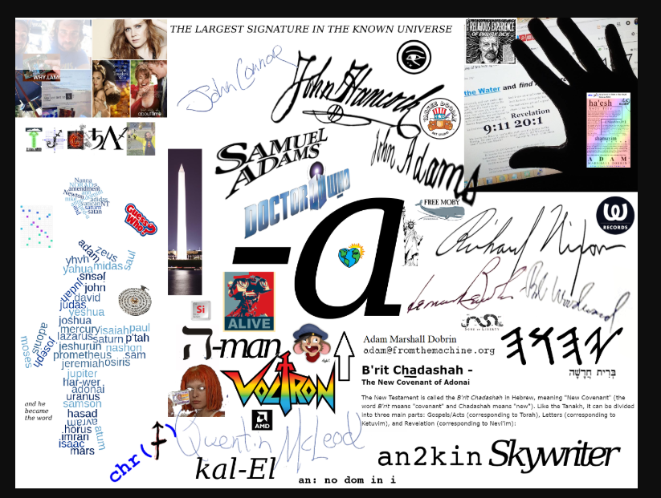
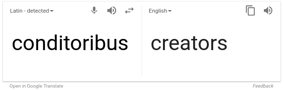

I am accepting charitable donations,.
ETH: 0xED5b06CCfD29a051d5bCeD2A9C334665c97211f8 | BTC: 3JmcKz2HfUDM4DTS2yufgexAmJ5Dh7PTM2 | DAI: 0x6Fc8F9A462A854Ab5933b44070Cb3899eB8C3045
oh, we're on our way
i know we are
to somewhere not so far from here


it's almost like someone wants you to associate Democracy with Cock.... and CK?

Chastity?

to ar.... dem


-the largest signature in the known Universe.

i find it hard to believe there are those among you that don't see "knowledge of e" as proof that schizophrenia is an attack on innocent people, perpetrated by the "thing" you call Heaven, and I really see as you, as e. Stand up and speak, or you will be judged. Your silence is not "building Heaven" nor is it protecting the source of Hell--only making you complicit in terrible acts of torture.
I'm really not sure why you don't see "the alternative"is allowing you to plunge yourselves and everyone else here further down in to the pit of despair. This is sick, you know there's an evil influence affecting the thoughts of people everywhere--and you're just sitting there, watching. This is not a "busr ide" or a scenic tour of the fiery inferno--this is your home, and mine too. Fix it.

exceptusque
que TACKON -que = and (enclitic, translated before attached word); completes plerus/uter; except.us ADJ 1 1 NOM S M POS exceptus, excepta, exceptum ADJ [FXXEE] Medieval uncommon only; excepted; except.us VPAR 3 1 NOM S M PERF PASSIVE PPL excipio, excipere, excepi, exceptus V [XXXAX] take out; remove; follow; receive; ward off, relieve;

conditoribus
conditor.ibus N 3 1 LOC P M conditor.ibus N 3 1 DAT P M conditor.ibus N 3 1 ABL P M conditor, conditoris N M [XXXBO] original builder, founder; originator/creator; author; preserver; organizer; seasoner, one who seasons; one who prepares a thing in a savory manner (L+S);

if you could only see the way, she loves me
maybe you'd understand.
ᐧ
 ᐧ
ᐧ
ᐧ
 ᐧ
ᐧ